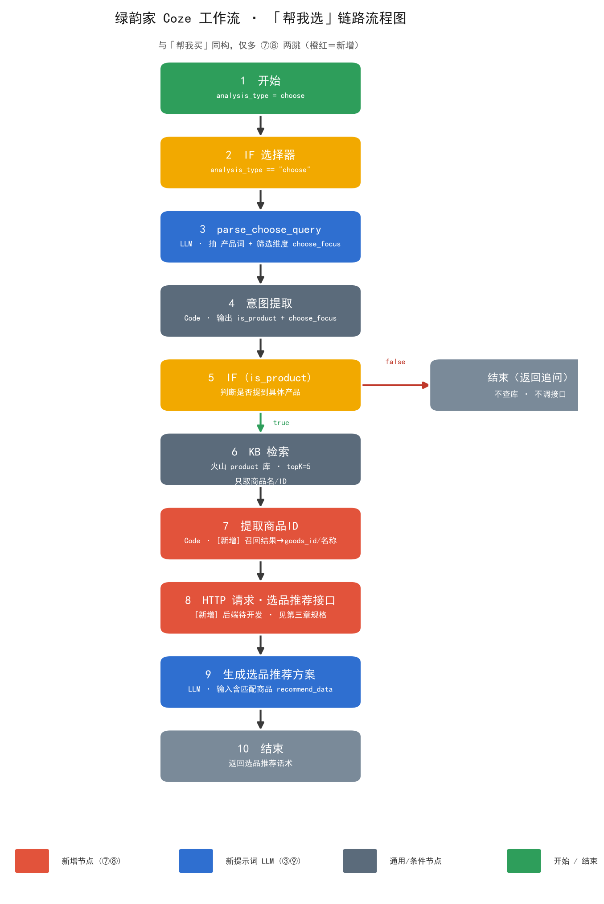

绿韵家 Coze 工作流 · 「帮我选」分支设计 + 选品推荐接口开发规格
文档版本 V1.0 · 2026-09-11 · 面向：Coze 配置人（第二、四章）/ App 后端开发（第三章）
一句话结论：帮我选 = 知识库把大白话映射成商品名/ID → 拿候选 + 用户筛选条件（人群/场景/功效/预算）调【选品推荐接口】取匹配商品与属性 → LLM 基于真实数据生成「为什么适合你」的推荐方案。
口径变更推荐依据全部来自后台实时商品库 + 筛选条件，知识库不存价格、不存推荐结论（知识库只当「商品名 → ID 的字典」）。这与此前「统一工作流卡里 6666 直接调 /api/recommend/guess-you-like」的设想不同，以本文档为准——选品需按用户条件筛选，不是单纯个性化猜你喜欢。
一、链路总览
与「帮我买」骨架同构，只多两跳（提取商品 ID + 选品推荐），其余节点可直接照搬 buy / save 分支的配置习惯。

图 1 · 「帮我选」分支链路（①~⑩）；橙红框为相对「帮我买」新增的 ⑦ 提取商品ID、⑧ 选品推荐接口 两跳
一行速览：① 开始(choose) → ② IF(==choose) → ③ parse_choose_query(LLM) → ④ 意图提取(Code) → ⑤ IF(is_product)；false→结束(追问)；true→ ⑥ KB检索(product,topK=5) → ⑦ 提取商品ID(Code，新增) → ⑧ 选品推荐接口(HTTP，新增) → ⑨ 生成选品推荐方案(LLM) → ⑩ 结束
| 节点 | 类型 | 与 buy / save 分支的差异 |
|---|
| ① 开始 | Start | 无差异，analysis_type = choose |
| ② IF 选择器 | Condition | 判断值 choose |
| ③ parse_choose_query | LLM | 独立新节点；输出多一个 choose_focus（选品筛选维度） |
| ④ 意图提取 | Code | 多透传 choose_focus |
| ⑤ IF(is_product) | Condition | 无差异 |
| ⑥ KB 检索 | Knowledge | 无差异（同一 product 库，topK=5） |
| ⑦ 提取商品ID | Code | 新增从召回结果抽 goods_id/名称，拼成接口入参 |
| ⑧ 选品推荐接口 | HTTP 请求 | 新增后端待开发，规格见第三章 |
| ⑨ 生成选品推荐方案 | LLM | 独立新提示词，输入多一路 recommend_data |
| ⑩ 结束 | Output | 产品分支返回话术；非产品分支返回追问 |
前提依赖（两个都齐了才能真跑通）：
- 知识库里能拿到商品 ID（当前 21 列表没有该字段 —— 见第五章待确认 #1，必须补）。
- 第三章的选品推荐接口开发完成并联调通过；在此之前用第四章的 Mock 数据先跑通链路。
二、节点逐项配置（Coze 可直接照抄）
先看这段 · ⑥ 知识库 与 ⑧ 选品接口 是两个完全不同的数据源，别混为一谈
「帮我选」里一共查了
两次东西，职责是分离开的，这是看懂整章的前提：
| 维度 | ⑥ KB 检索 | ⑧ 选品推荐接口 |
|---|
| 查的是谁 | 火山知识库 product（Coze 侧，向量召回，即常说的「向量库」） | 绿韵家 App 后端 POST /api/ai/recommend/choose |
| 归谁管 | Coze / 火山，我们只维护导入的表 | 我们自己的后端（第三章是给研发的规格） |
| 作用 | 只当字典：把「老人助眠喝啥」这类大白话翻译成商品名 + 商品 ID | 拿候选 ID/名称 + 价格区间，实时计算价格、会员价、规格、库存，并做价格过滤与排序；功效标签/适用人群/匹配分一期不返回（业务库无这些字段，改由 ⑨ LLM 基于 ⑥ 知识库召回内容定性解释） |
| 出不出价格 | 不出（口径变更已锁：价格一律不取、不信） | 出，sale_price / member_price / stock_status |
为什么不直接用知识库出推荐结果？ 知识库是
离线导入的静态表——价格会改、会员价要按
user_id 实时算、库存随时变。这些写进知识库，AI 就会答错价，是合规风险。所以分工是：
知识库负责「语义召回 / 翻译」（找候选），业务接口负责「实时决策」（定推荐），LLM 只把接口返回的真实属性组织成「为什么适合你」的话术，不自己造数据。
当前两个没填平的坑（看不懂多半出在这）：① 知识库那张表还没有「商品 ID」列（第五章待确认 #1），所以 ⑦ 实际只能按
goods_name 模糊匹配兜底，重名有误差；② 接口域名
{LYJ_API_HOST} 还是占位符，现在整条链路是用第四章 Mock 跑通的，接口未联调。
2.1 ③ parse_choose_query（LLM 节点）
| 配置项 | 值 |
|---|
| 模型 | 豆包 2.0 Pro |
| Temperature | 0.1 ~ 0.3（要稳定分类） |
| 输出格式 | JSON 模式 |
| 会话历史 | ON，轮数 5 或 6（本分支靠它实现「空输入复用上一轮产品」，见 2.4） |
| 输入变量 | input ← 开始节点 USER_INPUT；chatHistory 系统自动注入 |
系统提示词（System Prompt）
你是绿韵家「帮我选」意图解析助手，只负责把用户输入解析为结构化的选品意图 JSON，不回答、不推荐、不生成话术、不计算价格。
## 输出格式（严格遵守，不要多余文字，不要 markdown 代码块）
{
"intent_type": "choose" | "greeting" | "clarify",
"keywords": ["string", ...],
"constraints": {
"price_max": number|null,
"price_min": number|null,
"suitable_for": "string|null",
"scene": "string|null",
"effect": "string|null"
},
"choose_focus": ["crowd" | "scene" | "effect" | "price" | "health_goal", ...],
"follow_up_question": "string|null"
}
## 字段规范
1. intent_type（三态）
- choose：用户想被推荐/挑选商品（产品名/成分/功效/症状/场景词），keywords 非空
- greeting：纯问候/闲聊（"你好""在吗""你是谁"），keywords 必须 []
- clarify：想选但没说选什么（"有啥推荐的""帮我挑一个"），keywords 必须 []
- 下游 IF 据此二分：choose → 走产品分支（查库 + 选品推荐）；greeting/clarify → 不查库不调接口，直接返回 follow_up_question
2. keywords
- 必须是能对应到具体商品的词：产品名、成分、功效、症状、场景
- 允许："助眠""酸枣仁""水机""益生菌""钙片"
- 禁止：推荐类元词（"推荐""选""挑""适合我""给我找"）——这些归入 choose_focus，不进 keywords
- 数量 1~5 个；greeting/clarify 时必须 []
- 用户大白话优先保留原词，可扩 1 个同义词（"睡不着" 扩 "失眠"）
3. constraints
- 只填用户显式说的，禁止推测
- price_max / price_min：整数（元）。"两百以内"取 200；"便宜点"没数字 → null
- suitable_for：只能从 ["老人","儿童","孕妇","成人","男性","女性"] 中选
- scene：场景词自由文本（"熬夜""出差""健身""孕期"），没提 → null
- effect：功效词自由文本（"助眠""肠胃""免疫""体重管理"），没提 → null
- 没提 → 必须 null，不能填 "null" 字符串或空字符串
4. choose_focus（选品筛选维度，可多选，至少 1 个）
- crowd：按人群匹配（老人/儿童/孕妇等，来自 suitable_for）
- scene：按场景匹配（熬夜/出差/健身，来自 constraints.scene）
- effect：按功效匹配（助眠/肠胃/免疫，来自 keywords 或 constraints.effect）
- price：按预算匹配（来自 constraints.price_max/min）
- health_goal：按健康目标匹配（如"改善睡眠""增强免疫"，来自整句意图）
- 用户没明说任何筛选维度时（只说了产品），默认填 ["effect","crowd"]（帮人选的默认姿势：先按功效、再按人群匹配）
5. follow_up_question
- choose：仅在缺商品信息、确需补充时填；缺信息但能召回（如"助眠的"）则 null；完整问句带问号，一次只问 1 个
- greeting：填问候引导语（"你好，我可以帮你从绿韵家挑到合适的～想选哪类？比如助眠、肠胃、免疫，或者告诉我商品名也行。"）
- clarify：填反问引导语（"想选哪一类的呢？比如助眠、肠胃、免疫、体重管理，告诉我品类或商品名，我帮你挑几款合适的～"）
## 关键规则
1. **问候/寒暄严禁进入 keywords**："你好""在吗"→ keywords 必须 []；"问候""寒暄"这类元意图词严禁放入
2. **推荐类元词严禁进入 keywords**："推荐""选""挑""适合"是动作，不是商品，放入 choose_focus
3. 不要编造产品名、价格、库存；不计算、不预估任何金额（价格由下游接口给）
4. 多轮上下文：结合 {{chatHistory}} 理解指代
- 上轮"我想买助眠的"→ 本轮"那给我选几个"→ 沿用 ["助眠"]，intent_type=choose
- "那款适合老人吗" → 沿用上轮产品名
- 本轮为空或只有推荐词 → 从历史抽最近一次提到的产品词填入 keywords
## 正确输出示例
例 1
输入："帮我挑几款助眠的"
输出：{"intent_type":"choose","keywords":["助眠"],"constraints":{"price_max":null,"price_min":null,"suitable_for":null,"scene":null,"effect":null},"choose_focus":["effect"],"follow_up_question":null}
例 2
输入："适合老人的钙片有推荐的吗"
输出：{"intent_type":"choose","keywords":["钙片"],"constraints":{"price_max":null,"price_min":null,"suitable_for":"老人","scene":null,"effect":null},"choose_focus":["crowd"],"follow_up_question":null}
例 3
输入："出差好带的营养品"
输出：{"intent_type":"choose","keywords":["营养品"],"constraints":{"price_max":null,"price_min":null,"suitable_for":null,"scene":"出差","effect":null},"choose_focus":["scene"],"follow_up_question":null}
例 4
输入："预算200以内的益生菌"
输出：{"intent_type":"choose","keywords":["益生菌"],"constraints":{"price_max":200,"price_min":null,"suitable_for":null,"scene":null,"effect":null},"choose_focus":["price"],"follow_up_question":null}
例 5（空输入复用上下文）
历史：上轮"我想买助眠的"；本轮："那给我选几个合适的"
输出：{"intent_type":"choose","keywords":["助眠"],"constraints":{"price_max":null,"price_min":null,"suitable_for":null,"scene":null,"effect":null},"choose_focus":["effect","crowd"],"follow_up_question":null}
例 6（greeting）
输入："你好"
输出：{"intent_type":"greeting","keywords":[],"constraints":{"price_max":null,"price_min":null,"suitable_for":null,"scene":null,"effect":null},"choose_focus":["effect","crowd"],"follow_up_question":"你好，我可以帮你从绿韵家挑到合适的～想选哪类？比如助眠、肠胃、免疫，或者告诉我商品名也行。"}
例 7（clarify）
输入："有啥推荐的"
输出：{"intent_type":"clarify","keywords":[],"constraints":{"price_max":null,"price_min":null,"suitable_for":null,"scene":null,"effect":null},"choose_focus":["effect"],"follow_up_question":"想选哪一类的呢？比如助眠、肠胃、免疫、体重管理，告诉我品类或商品名，我帮你挑几款合适的～"}
## 错误输出示例（禁止出现）
❌ {"keywords":["推荐","挑"]} // 推荐类元词不能进 keywords，应进 choose_focus
❌ {"intent_type":"choose","keywords":[]} // choose 时 keywords 不能为空
❌ 输入"你好"输出 {"keywords":["问候"]}
❌ {"follow_up_question":""}
❌ {"choose_focus":[]} // 至少 1 个
❌ {"choose_focus":["划算"]} // 不在枚举内
❌ {"constraints":{"price_max":199}} // 用户没说数字
❌ 输出 markdown 代码块
❌ 输出任何价格/金额
用户提示词（User Prompt）
{{#if chatHistory}}
【历史对话】
{{chatHistory}}
【本轮输入】
{{input}}
{{else}}
{{input}}
{{/if}}
验收 case（试运行逐条跑）
| # | 输入 | intent_type | keywords | choose_focus | follow_up |
|---|
| 1 | 帮我挑几款助眠的 | choose | ["助眠"] | effect | null |
| 2 | 适合老人的钙片有推荐的吗 | choose | ["钙片"] | crowd | null |
| 3 | 出差好带的营养品 | choose | ["营养品"] | scene | null |
| 4 | 预算200以内的益生菌 | choose | ["益生菌"] | price | null（price_max=200） |
| 5 | 那给我选几个合适的（历史提过助眠） | choose | ["助眠"] | effect,crowd | null |
| 6 | 你好 | greeting | [] | （任意） | 问候引导语 |
| 7 | 有啥推荐的 | clarify | [] | effect | 反问引导语 |
| 8 | 增强免疫的、给孩子 | choose | ["免疫"] | crowd,effect（suitable_for=儿童） | null |
验收标准：8 条全过才算 OK。任一出现「推荐类元词进了 keywords」「choose 时 keywords 为空」「输出金额」「choose_focus 越界」→ 不过，把 case 丢回来调提示词。
2.2 ④ 意图提取（Code 节点）
与 buy / save 分支完全同构，仅多透传 choose_focus。
async function main({ params }) {
const obj = JSON.parse(params.parse_output || '{}');
const keywords = obj.keywords || [];
let focus = obj.choose_focus || [];
if (!Array.isArray(focus) || focus.length === 0) focus = ['effect', 'crowd'];
return {
keywords: keywords,
constraints: obj.constraints || {},
choose_focus: focus,
follow_up_question: obj.follow_up_question || null,
is_product: keywords.length > 0,
query: keywords.join(' ')
};
}
| 输出变量 | 类型 | 去向 |
|---|
keywords | Array<String> | ⑨ LLM |
constraints | Object | ⑨ LLM（决定筛选） |
choose_focus | Array<String> | ⑨ LLM（决定话术侧重） |
follow_up_question | String | ⑩ 结束（非产品分支） |
is_product | Boolean | ⑤ IF |
query | String | ⑥ KB 检索 query |
2.3 ⑥ KB 检索
| 字段 | 配置 |
|---|
| 来源 | 火山知识库 |
| 目标知识库 | product（与 buy / save 同一个库） |
| Query | {{意图提取.query}} |
| topK | 5 |
| 用途 | 只取商品名/ID/功效，价格一律不取、不信 |
2.4 ⑦ 提取商品 ID（Code 节点）新增
作用：把 KB 召回的 5 条结果，整理成选品推荐接口能吃的入参。与 save 分支的「提取商品ID」节点完全一致，可复制复用。
async function main({ params }) {
const list = params.outputList || [];
const items = [];
for (const it of list) {
const src = it.content ? JSON.parse(it.content) : it;
const gid = src.goods_id || src.goodsId || src.商品ID || '';
const name = src.goods_name || src.goodsName || src.产品简称 || src.产品全称 || '';
if (gid || name) items.push({ goods_id: gid, goods_name: name });
}
// 最多传 10 个，避免接口超时；去重
const seen = new Set();
const uniq = items.filter(i => {
const k = i.goods_id || i.goods_name;
if (seen.has(k)) return false;
seen.add(k);
return true;
}).slice(0, 10);
return {
items: uniq, // 供 HTTP 节点 body
has_items: uniq.length > 0 // 供 IF 判断是否跳过推荐
};
}
召回结果里没有 goods_id 怎么办：接口支持按 goods_name 模糊匹配（见 3.3 字段表），但重名/别名会有误差。根本解法是给知识库补「商品ID」列（第五章待确认 #1）。
2.5 ⑧ HTTP 请求节点（选品推荐接口）新增
| 配置项 | 值 |
|---|
| 请求方式 | POST |
| URL | {LYJ_API_HOST}/api/ai/recommend/choose（域名待研发给，先用 Mock 跑通） |
| Header | Content-Type: application/json；鉴权按网关约定 |
| Body | 见下方 |
| 超时 | 5 秒 |
| 失败处理 | 不中断流程：走 ⑨ LLM 的「情况 B（无推荐数据）」分支，只出定性话术 |
{
"user_id": "{{开始.user_id}}",
"scene": "choose",
"items": {{提取商品ID.items}},
"query": "{{意图提取.query}}",
"filters": {
"crowd": "{{约束.suitable_for}}",
"scene": "{{约束.scene}}",
"effect": "{{约束.effect}}",
"price_max": "{{约束.price_max}}",
"price_min": "{{约束.price_min}}"
},
"choose_focus": {{意图提取.choose_focus}},
"topN": 3
}
输出变量：recommend_data（Object，直接透传接口 data）→ ⑨ LLM 的 recommend_data。
2.6 ⑨ 生成选品推荐方案（LLM 节点）
| 配置项 | 值 |
|---|
| 模型 | 豆包 2.0 Pro |
| Temperature | 0.6（比 buy 的 0.7 略保守，推荐需稳） |
| 输入 | keywords / constraints / choose_focus / recall_list / recommend_data |
| 输出 | reply_text |
系统提示词（System Prompt）
# 角色
你是「绿韵家」AI 选品助手。基于用户的选品诉求、知识库召回的商品、以及后台返回的真实匹配商品与属性，帮用户挑出最合适的几款，并说清「为什么适合你」。
---
## 一、输入协议（严格按 XML 标签读取）
<用户意图>
商品关键词：{{keywords}}
筛选维度：{{choose_focus}} // crowd=按人群 / scene=按场景 / effect=按功效 / price=按预算 / health_goal=按健康目标
约束条件：{{constraints}}
</用户意图>
<召回商品列表>
{{recall_list}}
</召回商品列表>
<后台匹配商品>
{{recommend_data}}
</后台匹配商品>
---
## 二、核心任务与流控引擎
根据输入判断属于哪种情况，严格且仅能选择对应模板输出，严禁跨模板混搭。
### 情况 A：recommend_data 有数据（正常路径）
1. 先一句暖心共鸣（≤25 字），点出用户的选品诉求
2. 按 choose_focus 的优先级组织推荐，最多给 3 款
- crowd → 说明为什么适合该人群（"这款成分温和，老人吃着放心"）
- scene → 说明为什么契合该场景（"小条装好带，出差塞包里不占地"）
- effect → 说明核心功效为什么对（"酸枣仁+γ-氨基丁酸，帮入睡"）
- price → 在预算内优先推性价比款
3. 每款：商品名 + 一句为什么适合你 + 关键属性（价格/规格/适用人群）
4. 结尾一句行动引导
### 情况 B：recommend_data 为空 / 接口失败，但 recall_list 有商品
1. 不编造任何价格、库存、属性
2. 用定性表述推荐（"这几款里助眠方向比较对口，可以看看酸枣仁系列"）
3. 引导用户点进商品详情看实时信息与价格
### 情况 C：两者都空
1. 直接输出兜底追问，引导用户补充品类/商品名/人群场景
---
## 三、推荐口径（合规红线）
1. **数据源分流**：价格/会员价/规格/库存只能来自「后台匹配商品（选品推荐接口返回）」；功效、适用人群、使用场景、卖点只能来自「召回商品列表（⑥ 知识库）」。接口一期不返回标签字段，任何标签类内容只准从知识库召回原文里取，知识库里没有的，一个字都不许写。
2. **适配理由**要基于知识库召回的真实功效/人群/场景描述，不许凭空编"最适合你"；价格类理由用接口真实返回值。
3. **禁止**承诺"全网最好""绝对适合""保证有效"等绝对化表述。
4. **价格**如接口有返回可引用，无返回则不提；引用价格必带 disclaimer"以商品详情页为准"。
5. 不确定的（库存、时效、是否适合某疾病）一律不提。
---
## 四、数据处理与合规规则
1. 数据置信度：商品名称、功效必须来自召回或匹配数据，没有就别写。
2. 约束优先：用户说了预算/人群，不满足条件的款必须剔除或明确说明。
3. 严禁医疗诊断：不做疾病诊断、不替代医生，"治疗""治愈""根治""100%有效"一律禁止。
4. 禁用绝对化 / 药品化词汇："快速抑制""彻底解决""无副作用""一定有效""立刻见效"禁止。
5. 敏感词替换：用"辅助""帮助""有助于""建议搭配健康作息"等中性表达。
6. 特殊人群提醒：涉及孕妇、哺乳期、儿童、老人、慢性病、过敏体质、正在用药者，提示"建议先咨询医生或专业人士"。
7. 多轮上下文优先：当前轮意图最高，严禁套用上一轮模板。
---
## 五、输出格式与排版规范
- 语言风格：亲切、接地气、像朋友帮你挑。可适度用"哈""啦""噢"。
- 总字数：严格 100-250 字。
- 标题层级：必须且仅能使用五级标题 #####，带 emoji，单独成行，下方紧跟正文。
- 杜绝机械寒暄：严禁"好的""收到""以下是"。
- 输出形式：纯 Markdown 文本，不要 JSON，不要代码块。
---
## 六、结构模板（三选一，严禁混搭）
### 【模板 A：有匹配数据】
#####
💡 这几款挺适合你
挑得有点纠结是吧，按你说的帮你看好了～
#####
🛏️ 泰尔酸枣仁γ-氨基丁酸饮品
酸枣仁+GABA 帮着入睡，温和不依赖，睡前喝一条刚好，30ml 小条好带。
#####
👵 长辈钙片（液体钙）
液体钙好吸收，成分温和，老人平时吃着放心，一瓶能吃俩月。
💬 点进详情能看到实时价和完整成分，挑中了直接加购就行哈～
### 【模板 B：有商品无数据】
#####
🍃 这几款方向对口
助眠这块酸枣仁系列比较合适，成分也温和。
具体哪款更对你，点进商品详情看实时信息最准哈～
### 【模板 C：都为空】
#####
🍃 还没找准对应商品
想选哪一类的呢？比如助眠、肠胃、免疫、体重管理，
告诉我品类或商品名，我帮你挑几款合适的～
---
## 七、反例（严禁）
- 编造 recommend_data 里不存在的价格、属性、适用人群
- 说"全网最好""绝对适合"
- 推荐超过 3 款
- 使用医疗诊断语言
- 输出"根据接口返回""知识库匹配结果"等后台技术表述
- 在情况 B 下编造价格或属性
用户提示词（User Prompt）
<用户意图>
商品关键词：{{keywords}}
筛选维度：{{choose_focus}}
约束条件：{{constraints}}
</用户意图>
<召回商品列表>
{{recall_list}}
</召回商品列表>
<后台匹配商品>
{{recommend_data}}
</后台匹配商品>
配置要点：① 变量绑定 keywords/constraints/choose_focus ← 意图提取、recall_list ← KB检索.outputList、recommend_data ← HTTP请求.data；② HTTP 节点失败时 recommend_data 为空对象，LLM 会自动走模板 B，不需要额外的 IF 分支；③ 与 buy / save 同构，一期先纯文本返回，后续前端具备条件可加商品卡片。
2.7 ⑩ 结束节点
| 分支 | 返回 |
|---|
| 产品分支（is_product = true） | {{生成选品推荐方案.reply_text}} |
| 非产品分支（greeting / clarify） | {{意图提取.follow_up_question}} |
三、🔴 选品推荐接口开发规格（给 App 后端）
🔴 一期接口口径（关键）：绿韵家
业务库当前没有「功效 / 适用人群 / 使用场景」字段（商家后台商品表只有编号/商品信息/库存/价格等基础字段，见第七章待确认）。因此选品推荐接口
一期不按人群/场景/功效做数据库精确匹配，只做三件事：
- 候选过滤：仅按传入的候选商品（来自 ⑥ 知识库召回）取数，不做语义扩召回之外的筛选；
- 价格区间过滤：仅按
price_min / price_max 硬过滤超预算的款；
- 排序：按价格升序（或候选传入顺序）返回 TopN。
「人群 / 场景 / 功效是否适合你」的匹配判断与解释，全部交给 ⑨ LLM，基于 ⑥ 知识库召回的真实商品介绍（含功效、人群、场景描述）做定性解释，不依赖业务库返回任何标签字段。接口
不返回 effect_tags /
suitable_crowd /
match_score 这类需要业务库标签支撑的字段。
接口一句话：传入用户 ID + 候选商品（ID 或名称）+ 价格区间，返回按价格过滤、排序后的 TopN 商品及其真实价格属性（售价/会员价/规格/库存），供 AI 结合知识库召回内容生成「为什么适合你」的推荐方案。
不需要：不需要算优惠券最优凑单，不需要实时库存（只给有货/无货状态），不需要写推荐话术（话术由 LLM 生成），不需要业务库有功效/人群/场景标签。
3.1 接口定义
| 项 | 值 |
|---|
| 名称 | AI 选品推荐接口 |
| 路径 | POST /api/ai/recommend/choose |
| Content-Type | application/json |
| 鉴权 | 走内部网关（与现有商品接口一致），不对 C 端直接开放 |
| 超时 | 服务端 ≤ 800ms（P95）；Coze 侧 5s 超时后降级不报错 |
| 幂等 | 是（纯查询，无副作用；严禁锁券、严禁占库存） |
3.2 请求参数
| 字段 | 类型 | 必填 | 说明 |
|---|
user_id | String | 是 | 用于取会员等级 → 算会员价。未登录时传空串 |
scene | String | 是 | 固定 "choose"，预留扩展 |
items | Array | 是 | 1~10 个候选商品（来自 KB 召回）。元素：{"goods_id":"", "goods_name":""}，二者至少有一个，goods_id 优先 |
query | String | 否 | 用户原始关键词拼接，供后端兜底检索/扩召回 |
filters | Object | 否 | 一期仅支持价格区间：price_max / price_min。超预算的款由接口硬过滤剔除。crowd / scene / effect 一期不传接口（业务库无对应字段），人群/场景/功效的适配由 ⑨ LLM 基于 ⑥ 知识库召回内容判断，不在接口层过滤 |
choose_focus | Array | 否 | 一期不再作为接口入参。crowd/scene/effect/price/health_goal 仅由 ③ 意图解析节点提取、供 ⑨ LLM 决定解释侧重，不传给后端 |
topN | Integer | 否 | 返回几个，默认 3，最大 10 |
请求示例
{
"user_id": "u_10086",
"scene": "choose",
"items": [
{"goods_id": "10233", "goods_name": "酸枣仁饮"},
{"goods_id": "", "goods_name": "镁元素片"}
],
"query": "助眠",
"filters": {
"price_max": 200,
"price_min": null
},
"topN": 3
}
3.3 响应结构
{
"code": 0,
"message": "ok",
"data": {
"user_level": "svip",
"items": [
{
"goods_id": "10233",
"goods_name": "泰尔酸枣仁γ-氨基丁酸饮品",
"main_image": "https://cdn.xxx.com/10233.jpg",
"spec": "30ml×7袋/盒",
"line_price": 49.9,
"sale_price": 35.0,
"member_price": 29.9,
"stock_status": "in_stock",
"matched_by": "goods_id"
}
]
}
}
data.items[] 字段定义
| 字段 | 类型 | 必填 | 口径说明 |
|---|
goods_id | String | 是 | 商品 ID，App 跳详情要用 |
goods_name | String | 是 | 商品全称 |
main_image | String | 否 | 主图 URL，后续出卡片用 |
spec | String | 否 | 规格（如 30ml×7袋/盒） |
line_price | Number | 否 | 划线价/原价，没有就不返回 |
sale_price | Number | 是 | 当前售价（非会员） |
member_price | Number | 否 | 会员价；用户非会员或商品无会员价时不返回 |
stock_status | String | 是 | in_stock / out_of_stock；无货的也要返回，AI 侧会剔除不推荐 |
matched_by | String | 是 | goods_id / goods_name，便于排查召回质量 |
sort | String | 否 | 排序口径说明：默认按 sale_price 升序；无预算约束时按候选传入顺序。items 已是排好序的 TopN 结果，AI 直接取用，不自行按功效/人群重排 |
接口一期不返回标签类字段：effect_tags / suitable_crowd / highlights / match_score / match_reason 全部取消。业务库当前没有功效/人群/场景字段，返回即造假；「适合你」的解释由 ⑨ LLM 基于 ⑥ 知识库召回原文生成。
3.4 推荐口径定义（一期实现范围）
接口层（后端）只负责：① 按 filters.price_min/price_max 硬过滤超预算款；② 按价格升序（或候选传入顺序）排序；③ 截断 TopN；④ 返回真实价格/会员价/规格/库存。不做功效/人群/场景的数据库匹配与打分。
| 职责 | 由谁做 | 说明 |
|---|
| 候选过滤 | 后端接口 | 仅按传入候选商品取数，仅 price_min/price_max 硬过滤 |
| 价格区间过滤 | 后端接口 | 超预算款不进 items |
| 排序 | 后端接口 | 默认按 sale_price 升序；无预算约束时按候选传入顺序，截断 TopN |
| 功效 / 人群 / 场景「是否适合」的判断与解释 | ⑨ LLM（基于 ⑥ 知识库召回） | LLM 读知识库召回的商品介绍（含功效/人群/场景描述），结合用户约束，生成「为什么适合你」；不依赖接口返回任何标签字段 |
必须遵守：
- 接口严禁返回需要业务库标签支撑的
effect_tags / suitable_crowd / match_score 字段（业务库当前无这些字段，返回即造假）。
- 找不到对应商品 → 该项不出现在 items 里，不要返回 null 占位。
- 只返回 上架且在售 的商品；已下架/未开始的不要返回。
- 预算过滤在最终排序前做硬过滤，超预算的款不进 items。
- LLM 侧的「适配理由」必须基于 ⑥ 知识库召回真实内容，不得编造功效/人群标签（见第二章分工与 ⑨ 提示词约束）。
3.5 错误码
| code | 含义 | Coze 侧处理 |
|---|
| 0 | 成功 | 正常出方案 |
| 40001 | 参数缺失（items 为空） | 走模板 B，定性说明 |
| 40004 | user_id 无效 | 按非会员价重试一次，仍失败走模板 B |
| 40401 | 商品全部未匹配上 | 走模板 B |
| 50001 | 服务内部错误 | 走模板 B，不向用户暴露错误 |
统一原则：选品推荐是增强项，不是阻塞项。任何失败都降级为「不报属性，只做定性推荐」，保证用户拿到的回答不中断。
3.6 验收 checklist（开发自测）
| # | 场景 | 期望 |
|---|
| 1 | 传候选商品 + query=助眠，有命中商品 | items 返回真实价格属性，按价格升序；功效/人群适配由 LLM 基于知识库生成，接口不返回 match_score |
| 2 | 会员用户 | items 含 member_price 且 save_reason 含会员省额 |
| 3 | filters.price_max=200，有超预算款 | 超预算款不出现在 items 里 |
| 4 | 只传 goods_name（无 ID） | 模糊匹配命中，matched_by = goods_name |
| 5 | 传一个不存在的商品名 | 该 item 不出现在返回里，code 仍为 0 |
| 6 | 无任何 filters | 按候选传入顺序（或价格升序）返回 topN，不报错 |
| 7 | items 传 10 个 | P95 < 800ms，不超时 |
| 8 | 连续调 2 次同参数 | 结果一致（幂等） |
| 9 | 商品无货 | 仍返回，stock_status = out_of_stock |
| 10 | user_id 无效 | 返回 40004，不报 500 |
四、Mock 数据（接口未就绪时先跑通链路）
把下面这段直接贴到 HTTP 请求节点的「Mock 返回」里，或用一个「输出固定值」的 Code 节点临时替代，先把 ③~⑩ 的链路和提示词调通。
{
"code": 0,
"message": "ok",
"data": {
"user_level": "svip",
"items": [
{
"goods_id": "10233",
"goods_name": "泰尔酸枣仁γ-氨基丁酸饮品",
"spec": "30ml×7袋/盒",
"line_price": 49.9,
"sale_price": 35.0,
"member_price": 29.9,
"stock_status": "in_stock",
"matched_by": "goods_id"
}
]
}
}
五、待确认清单
| # | 事项 | 建议 / 影响 | 责任方 |
|---|
| 1 | 知识库缺「商品ID」列（21 列表里没有），接口主要靠 goods_id 匹配 | 建议 KB 表新增第 22 列「商品ID/货号 [P0]」，业务照抄后台；本期可先用名称匹配兜底 | PM + 业务 |
| 2 | 选品推荐接口域名与鉴权 | 研发给后替换 {LYJ_API_HOST} | 后端 |
| 3 | 筛选维度口径（一期已定） | 接口一期仅按 price_min/price_max 价格区间过滤；人群/场景/功效不进接口，由 ⑨ LLM 基于知识库召回内容定性解释。不再设"维度够不够"待确认 | 已裁定 |
| 4 | 解释侧重 | 一期不做匹配打分（无 match_score）；LLM 按 ③ 意图解析的 choose_focus 决定"为什么适合你"的解释侧重，前端无需传权重 | 产品 + 后端 |
| 5 | 本期是否出真实商品卡片 | 与 buy / save 一致先做纯文本（接口已返回 goods_id / main_image，前端具备出卡条件后可加） | 产品 + 前端 |
| 6 | 兜底检索口径 | 候选 items 全未命中时，是否用 query 在商品库兜底检索？建议开，召回更多 | 产品 |
相关文档：lvyunjia-ai-workflow-dev-api.html（后端对接总文档）、lvyunjia-ai-workflow-swimlane.html（泳道与 buy 分支节点）、lvyunjia-ai-workflow-save.html（帮我省分支 + 查价接口，本文件同构参考）、lvyunjia-ai-coze-kb-prep.md（知识库填写模板）。